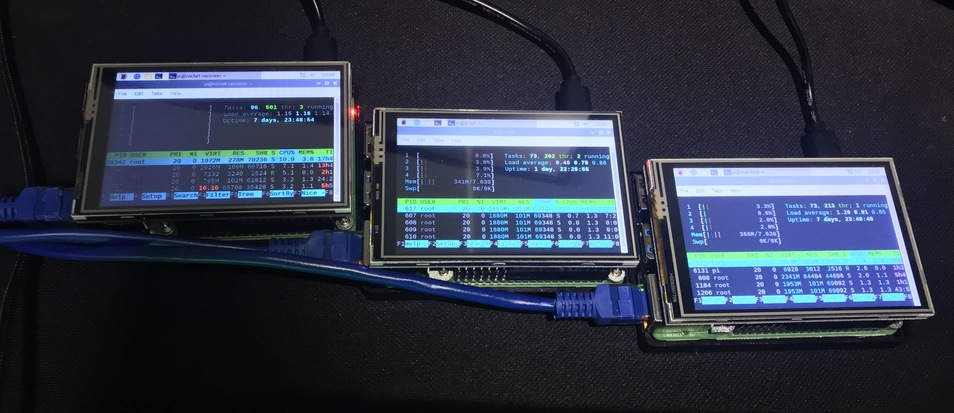

<div class="cluster-component">
    <div class="row">
        <div class="col-sm-12 col-md-12 col-lg-12">
            <div class="cluster-text">

                <p>
                    This website is running in a kubernetes cluster with 3 Raspberry Pi, seriously!
                </p>

                <p>
                    Yeah, I know this is like using a bazooka to kill an ant, but I made this mainly to learn kubernetes
                    and now I have a cluster to put some personal apps available through the internet without having to pay new servers.
                </p>

                <p>
                    Check out my boys (rocket-raccoon, groot and star-lord). They are 3 Raspberry Pi 4B with 8GB ram each, running Raspberry Pi OS (64 bit).
                </p>

                

                <p>
                    Before starting this project I knew I was going to learn some new things but the learning curve went way beyond what I was imagining it would be.  
                    I learned a lot about networks, kubernetes, docker, jenkins, linux and even how to get out of vi.
                </p>
                <p>
                    This was a super fun project to do and it was totally worth it.
                </p>

            </div>
        </div>
    </div>
</div>
